Pythonに関するドキュメントを参照する
Python を使ったプログラミングを行う上で、参考になるドキュメントを参照する方法について解説します。
ダウンロード済のドキュメントを参照する
Python のインストールを行う時にオプション機能を選択する画面で Documentation にチェックを入れていた場合、 Windows ヘルプ形式のドキュメントもローカルにダウンロードされています。
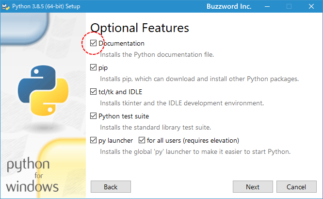
Python をインストールしたディレクトリを見て下さい。 Doc という名前のディレクトリが作成されています。
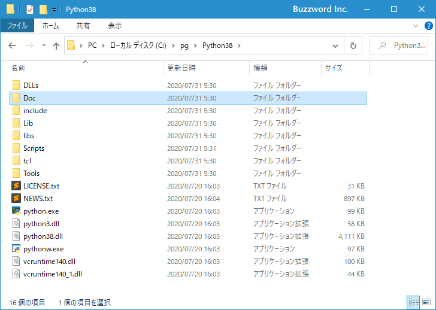
ディレクトリの中にある python385.chm ファイルをダブルクリックして下さい。
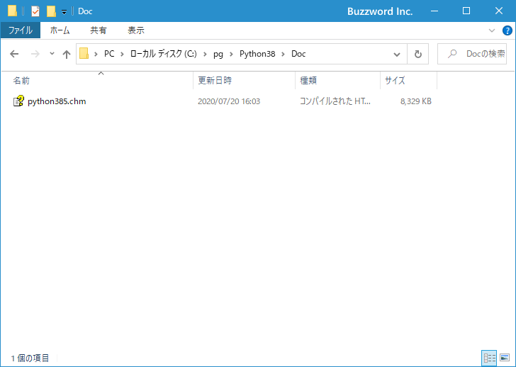
Windows ヘルプ形式の Python のドキュメントを参照することができます。
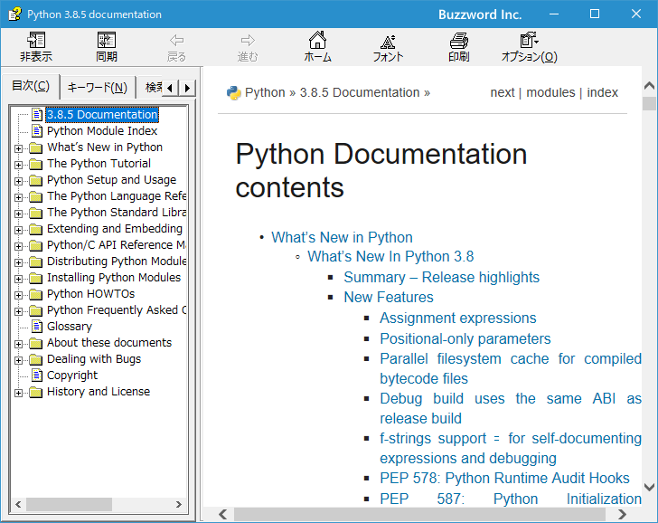
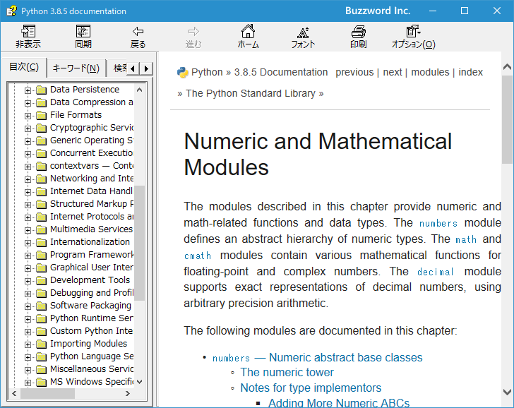
Web上にあるドキュメントを参照する
Python に関するドキュメントは Web 上でも参照することができます。 Python をダウンロードした時と同じ下記の URL へアクセスして下さい。
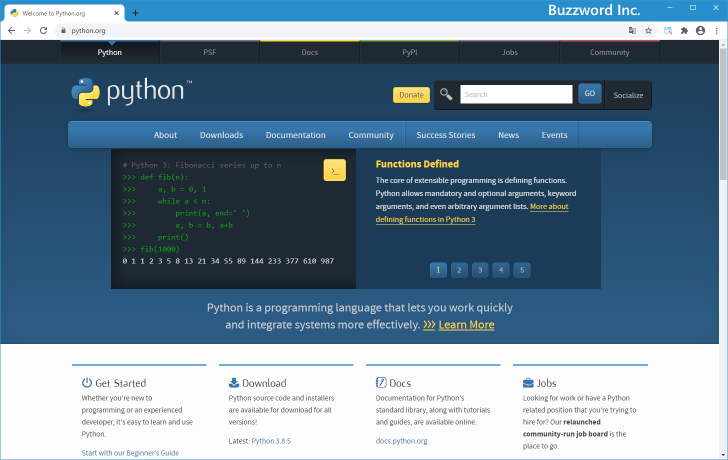
画面上部に表示されているメニューの中から「Documentation」にマウスを合わせるとメニューが表示されます。メニューの中から「Docs」をクリックしてください。
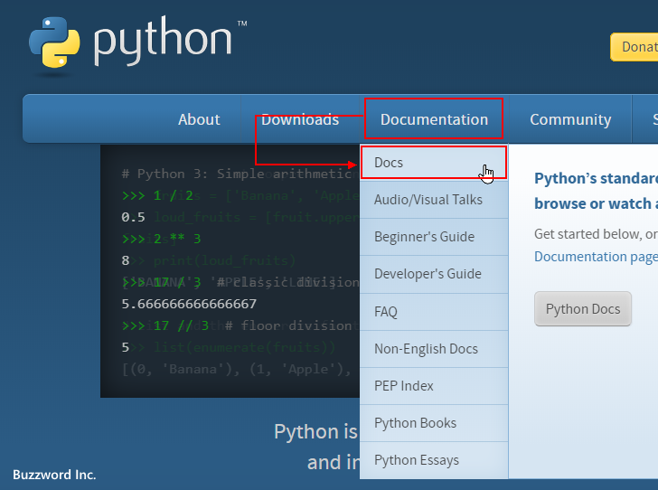
ドキュメントに関するページが表示されますので「Python Docs」をクリックしてください。
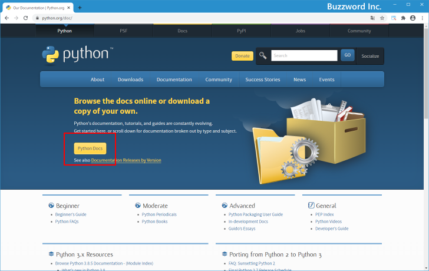
Python に関するドキュメントが表示されます。
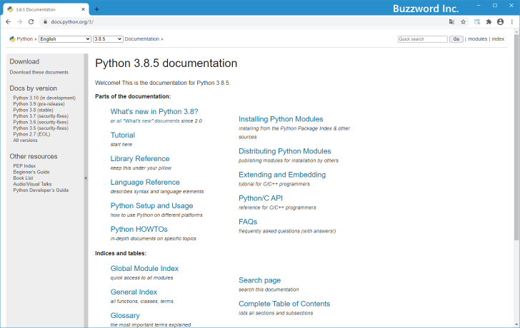
ページ左上のドロップダウンメニューで「Japanese」を選択することで日本語でドキュメントを参照することができます。
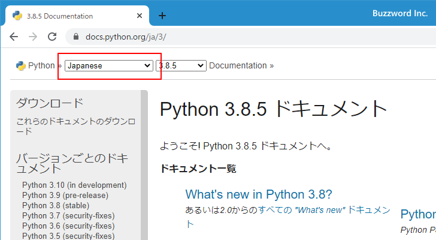
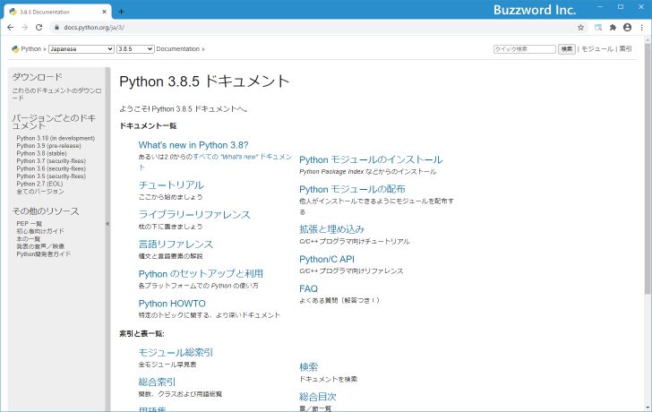
-- --
Python に関するドキュメントを参照する方法について解説しました。
( Written by Tatsuo Ikura )

著者 / TATSUO IKURA
初心者～中級者の方を対象としたプログラミング方法や開発環境の構築の解説を行うサイトの運営を行っています。